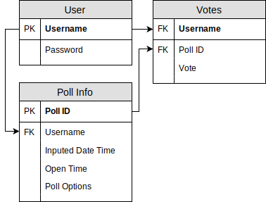

Who?
This website is created by Akash Aryal. I am currently a student at Manhattan Highschool
What?
This is a polling website that utilizes various polling methods and techniques to choose a winner. Statistical analysis of votes will be added later.
When?
Project Started summer of my Junior Year (2018)
Why?
I like learning by doing, so I started this project as a way to learn the basics of web development.
Source code for this project can be found at https://github.com/AkashAryal/poll.git.
How?
- Languages Used: html, css, javascript, php, mysql
- Relational Database model/Entity-Relationship(ER) Diagram:

- Login System: username and password are stored in a database. Passwords are stored in an encrypted form that utilizes salts.
- User will get timed out every hour. Session cookies are used. Logging off will destroy all cookies
- Polls are created by the user and given a unique id that gets stored in the database along with the rest of the poll information.
- Voting on a poll requires a poll id. The database is used to ensure that you only vote once and your vote is within the timeframe
the creater of the poll set. Votes are stored in the database.
- Hosting on 000webhost as it is free and easy to use.